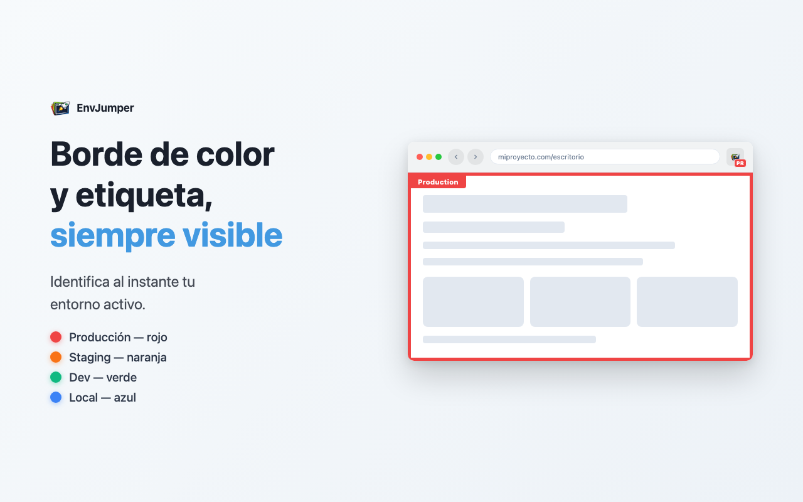

Cambio en un clic
Ruta, parámetros y ancla conservados. En la pestaña actual o en una nueva.
Gratis y open source Sin cuenta · Sin rastreo
Deja de reescribir URLs. EnvJumper pasa de producción a staging o dev en un clic, conserva la ruta y dibuja un borde de color para que siempre sepas dónde estás.
Haz clic en un entorno ↑
Detectas un bug en producción. Quieres comprobarlo en staging. Nueva pestaña, reescribir la URL, cambiar el subdominio, Enter…
EnvJumper lo hace en un clic.
Ruta, parámetros y ancla conservados. En la pestaña actual o en una nueva.
Borde de color en la página, una etiqueta y las iniciales del entorno en el icono.
WordPress (incl. Multisite), Joomla, Drupal, PrestaShop, Magento y Shopify — detectados automáticamente.
Una API de staging, un panel de métricas, un back office: a un clic, en cada entorno.
¿Staging con contraseña? Introduce las credenciales una vez y EnvJumper responde por ti.
Clic derecho en un enlace de una página reconocida para abrirlo en otro entorno.
Exporta a JSON, envíalo a un compañero, importa. Fusionar o reemplazar — todos con la misma config.
¿Presentación a un cliente? Oculta el borde y la etiqueta desde los ajustes.

Proyectos y credenciales se guardan localmente en Chrome. Sin cuenta, sin servidor, sin analíticas. La única petición externa es el servicio de favicons de Google, usado cuando el icono de un proyecto no puede cargarse directamente.
Leer la política de privacidad →Lo más fácil: instálala desde la tienda y recibe actualizaciones automáticas.
Añadir a Chromegit clone https://github.com/drashka/EnvJumper.gitAlt + J abre el popup desde cualquier lugar.